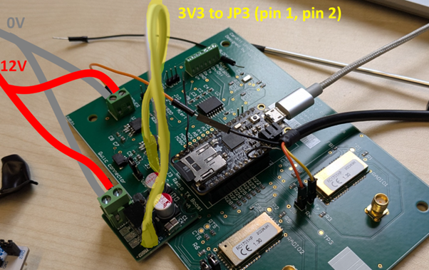
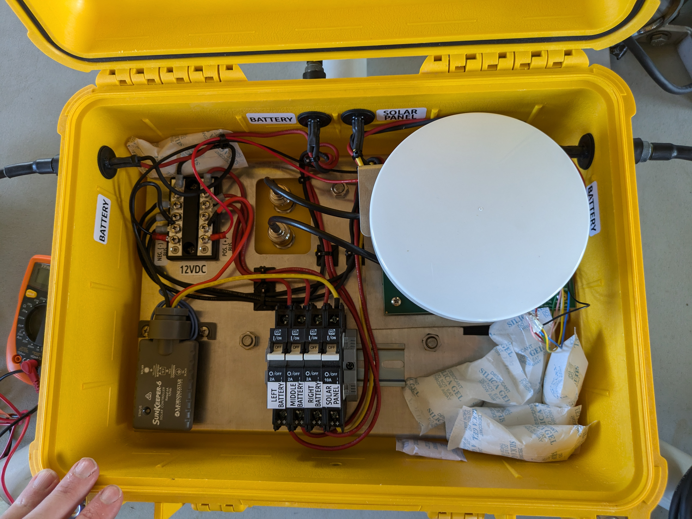
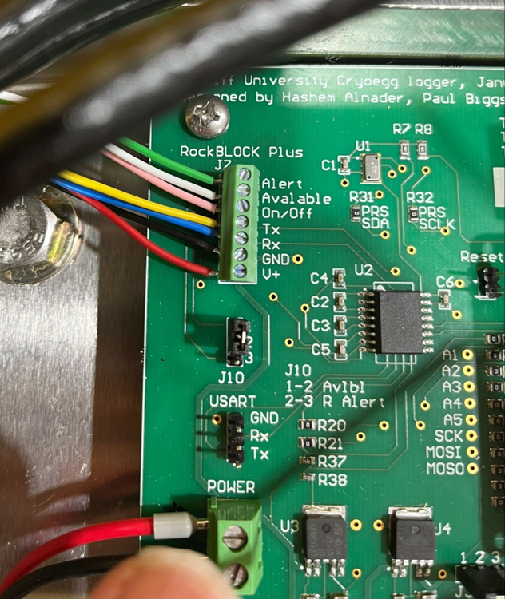

Hardware#
Equipment#
CHIL datalogger PCB (old version, with modboard and jumpers)
screws to attach PB to baseplate
RockBLOCK+ satellite modem
thumbscrews for attaching modem
multimeter
pink loctite
Assembly
Before going into the field, it’s a good idea to set up and test the system in advance, somewhere where you have access to the internet and potentially a workshop for last-minute tweaks.
Testing electrical system#
Connect batteries to the Peli case, and power on by switching the battery breakers on
Check (using multimeter across the power (red) and ground (black) wires) that voltage is between 12 and 15V. Check that red is in fact positive and black negative!
Connect the solar panels, expose them to light, and check that the battery voltage increases (slightly).
Installing the PCB#
Refer to Fig. 6
Note the older PCBs may have a modboard attached. This should be connected with jumpers to JP3.
connect 12V power and ground to the terminal blocks as shown
Screw PCB into baseplate undeneath satellite modem mount (Fig. 7)


Fig. 6 Connecting PCB power and ground#


Fig. 7 Inside of pelicase after assembly. Note the PCB is underneath the RockBLOCK modem!#
Installing RockBLOCK modem#
Cut and strip RockBLOCK modem cable to suitable length (around 150mm).
Mount the RockBLOCK to the bracket using the two thumbscrews. It only mounts with two screws despite having four mounting points. Use pink Loctite to secure them so that they don’t rattle out.
Wire the RockBLOCK to the PCB as shown in figure x. Wire colours are as follows:
Green = Alert
White = Available
Pink = On/Off
Yellow = Tx
Blue = Rx
Black = Ground
Red = V+


Fig. 8 RockBLOCK cable wired into datalogger PCB#